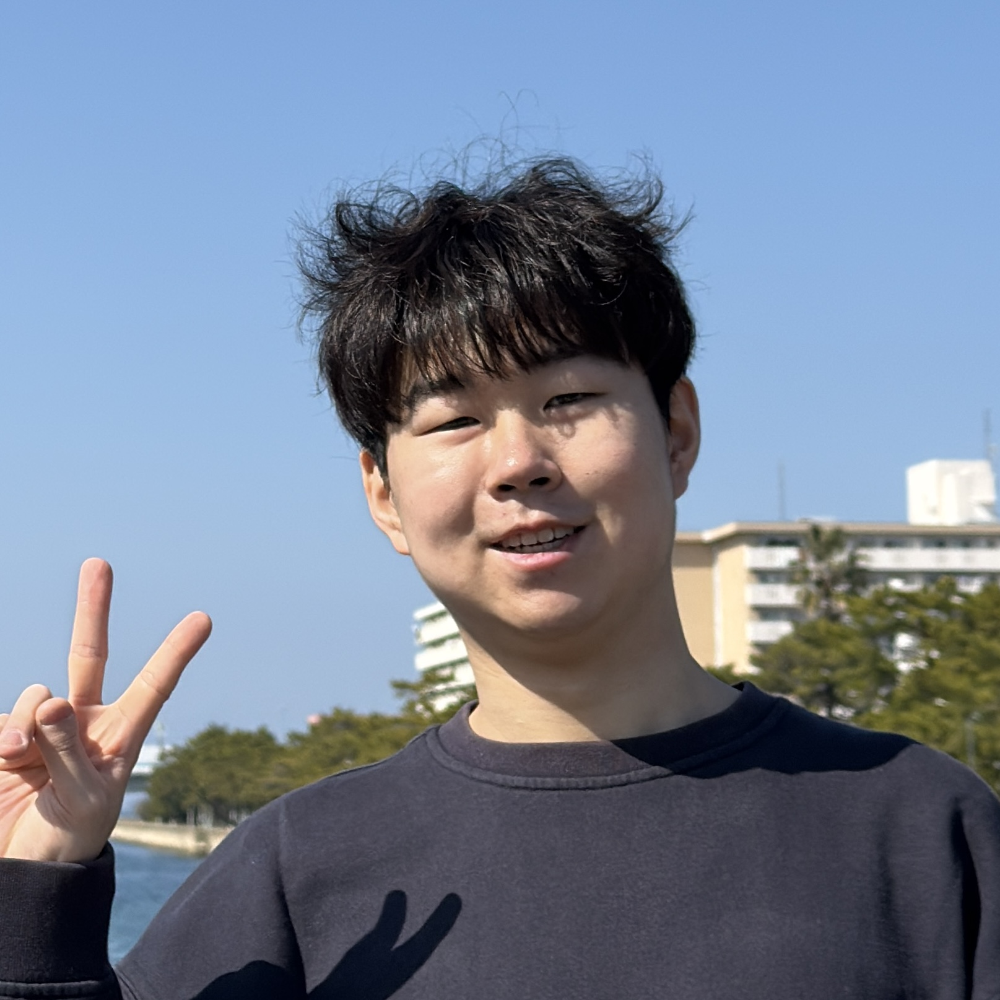
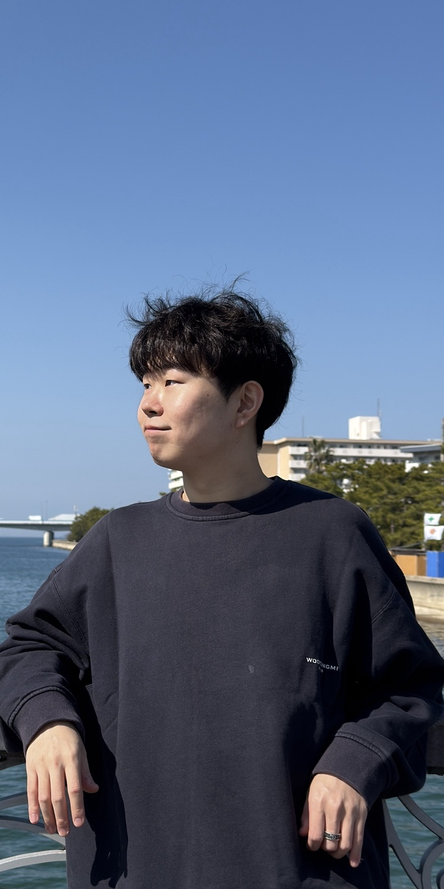

My Projects
A selection of my range of projects
Game Developer

I have experience writing C++ programs through coursework and projects. I am familiar with object-oriented programming, classes, pointers, memory management, debugging, and building small systems with reusable code.
I am interested in gameplay programming and interactive systems. I have worked on game-related features such as player movement, collision, UI behavior, and gameplay logic.
As a QA team member, I tested gameplay systems, reported bugs, and suggested improvements for game balance and player experience. I helped evaluate systems such as health, damage, recovery timing, and player feedback.
Student Game Programmer Seokwon Jung
I am Seokwon Jung, a student game programmer who is passionate about game development. I enjoy learning how games are built, from gameplay systems and player controls to debugging, testing, and improving the overall player experience.
I am also interested in computer graphics through my coursework, especially topics such as transformations, cameras, meshes, rasterization, and rendering. As someone who also loves playing games, I want to create interactive experiences that feel fun, responsive, and meaningful to players.

A selection of my range of projects
Gameplay Programmer / QA Contributor, OLLIM
2025 - Present
ASTAR Team, DigiPen Institute of Technology
Testing gameplay systems, reproducing bugs, and reporting issues clearly while contributing to
player experience improvements through balance, health, damage, and recovery timing adjustments.
QA / Gameplay Programmer, DIESKIE
2025
DigiPen Institute of Technology
Contributed beyond QA by fixing random path generation bugs, implementing the final random map
generation algorithm, building collision systems, and developing ski movement mechanics that slow
the player based on horizontal movement speed.
DIESKIE
2025
First-Person Skiing Game
Implemented gameplay effects including collision feedback with trees and experimented with multiple
shadow techniques to support the game's visual direction during play.
CS250 Graphics Portfolio
2026
WebGL / OpenGL
Created a portfolio website for graphics coursework and prepared dedicated pages for procedural
geometry, fog, toon shading, shadow mapping, and procedural noise demos.
Team Collaboration and Review, DigiPen Institute of Technology
2025 - Present
Daegu, Korea
Communicated test results, reviewed gameplay behavior with teammates, and helped identify issues
that affected player experience during coursework projects.
Bachelor of Science in Computer Science in Real-Time Interactive Simulation
2022 - Present
Daegu, Korea & Redmond, WA, USA
Relevant Courses: Computer Graphics, C/C++ programming, real-time interactive simulation, game
project courses, debugging, and software development fundamentals.